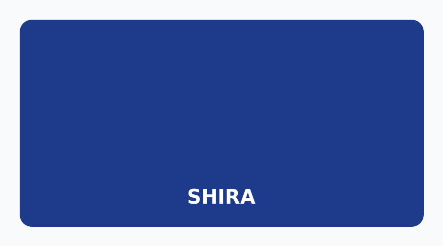

SHIRA
Презентация для инвесторов • MVP 2.0.0
Учёт этикеток и видеоархива
без интернета и без облаков
Локальная программа для Windows, которая индексирует видео, находит этикетки с QR‑кодами и штрихкодами, помогает проверить номера и экспортировать результат в CSV/XLSX.

Рынок и боль
С чем сталкиваются склады и службы упаковки
Нужно соотносить видеозаписи с этикетками товаров, находить конкретный идентификатор по таймкоду в часах записи и подтверждать результат вручную. Сегодня это делается вслепую или вручную — долго и с ошибками.
Без SHIRA
- Поиск номера в видео — вручную, по таймкодам.
- Нет привязки этикетки к кадру.
- Ручной перенос данных в таблицы.
- Риск ошибок и потери номера.
С SHIRA
- Автоматический поиск этикеток на кадрах.
- Таймкод каждого появления номера.
- Ручная проверка перед экспортом.
- Экспорт в CSV/XLSX и бэкап базы.
Продукт
Что делает SHIRA
Программа для рабочего стола под Windows 10/11 x64. Работает полностью офлайн — данные не покидают компьютер пользователя, что критично для конфиденциальных производственных материалов.
🎞
Видеоархив
Индексация видео, выбор кадров, привязка этикеток к таймкоду.
🔍
Распознавание
QR‑коды и штрихкоды, OCR, поиск идентификаторов.
💾
Проверка и экспорт
Очередь проверки, CSV/XLSX, резервное копирование БД.
Три режима работы
Под разные задачи
1
Короткая (< 3600 с)
Равномерная выборка кадров и ручное подтверждение кандидатов.
2
Длительная (≥ 3600 с)
Интервальное индексирование, таймкоды, сводка наблюдений.
3
Фото
Группировка по разделителям A/B, копирование/перенос с проверкой SHA‑256.
Все три режима реализованы в MVP 2.0.0. Режим «Фото» защищает от дублей и потерь через реестр операций.
Конкурентные преимущества
Почему SHIRA
🔒
Офлайн и конфиденциальность
Никаких облачных серверов. Видео и данные остаются на компьютере заказчика.
☑
Проверка перед экспортом
Ручное подтверждение номеров — нет слепого доверия автоматике.
🛡
Отказоустойчивость
Контрольные точки, реестр операций, бэкап и импорт базы.
Статус и следующие шаги
MVP готов к пилотированию
Версия 2.0.0 собрана, прошла автоматическое тестирование (unittest), подготовлена документация и инсталлятор для Windows. Программа готова к демонстрации потенциальным пользователям на складах и в службах упаковки.
Что готово
- Три режима обработки видео и фото.
- Графический интерфейс на русском языке.
- CLI‑режим для пакетной обработки.
- Экспорт CSV/XLSX, бэкап БД.
- Инсталлятор 01_INSTALL.cmd (офлайн).
Дальше
- Пилот на реальных объектах заказчика.
- Сбор обратной связи и доработка точности.
- Публичный релиз и документация для пользователей.